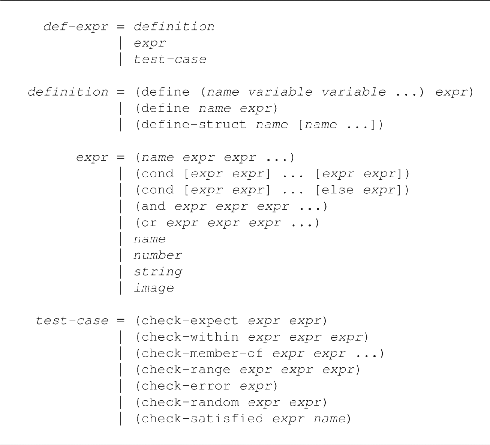
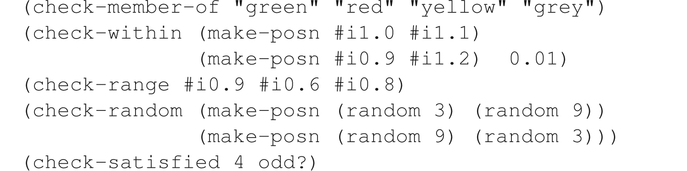

BSL Tests
Figure 43 presents all of BSL plus a number of testing forms.

Figure 43: BSL, full grammar
The general meaning of testing expressions is easy to explain. When you click the RUN button, DrRacket collects all testing expressions and moves them to the end of the program, retaining the order in which they appear. It then evaluates the content of the definitions area. Each test evaluates its pieces and then compares them with the expected outcome via some predicate. Beyond that, tests communicate with DrRacket to collect some statistics and information on how to display test failures.
Exercise 128. Copy the following tests into DrRacket’s definitions area:

Validate that all of them fail and explain why.